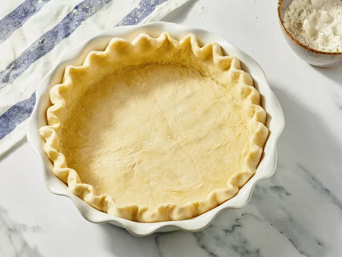

Home
Pie Crust

Desciption
This is the best pie crust recipe for making a homemade flaky,
tender crust with just the right balance of flour, shortening,
and water. I use this recipe often as I am a pie baker—the
dough is easy to mix, rolls out beautifully, and freezes
perfectly for make-ahead pies. The trick to good pie crust is
to be gentle and treat it very lightly.
Ingredients
- 1/2 cup vegetable shortening
- 1 1/2 cups all-purpose flour
- 1/2 teaspoon salt
- 1/2 cup ice-cold water
Steps
- Gather all ingredients.
- Combine flour and salt in a medium bowl. Add shortening and
mix with a fork or pastry blender until the mixture is very
crumbly. Sprinkle in cold water, 1 tablespoon at a time,
stirring lightly with a fork until dough holds together.
You may not need all the water.
- Roll dough gently on a floured pastry cloth to about 1 inch
larger than your pie plate.
- Fold dough carefully in half, place it in pie plate, and
unfold. Press gently into pan. For a single-crust pie, trim
to about ½ inch beyond the rim, fold under, and flute or
crimp as desired.
- Enjoy!